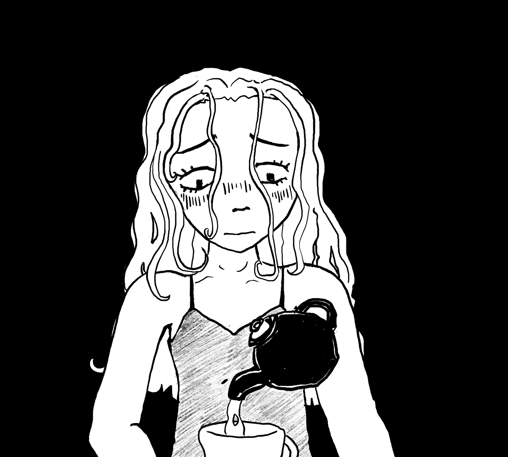
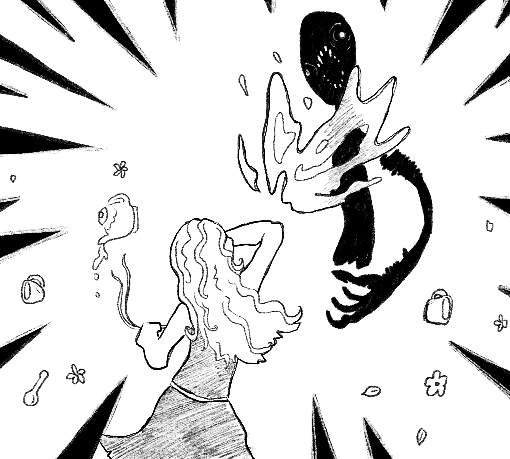
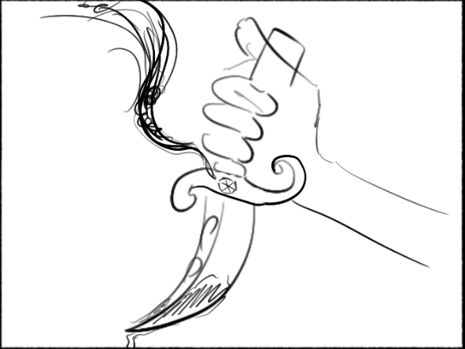

PRologuE
In the mystical depths of the woods,
where majestic trees stood tall and graceful, their branches reaching skyward,
a curious soul named Alice sought refuge from reality,
if only for a short while.

Venturing deeper into the woods,
Alice stumbled upon a clearing, illuminated by an ethereal glow.
In its center stood a peculiar mushroom, its allure irresistible. Driven by curiosity,
she took a bite, hoping to satisfy the hunger that had gripped her.


For a fleeting instant, Alice basked in the tranquil serenity of her thoughts.
Yet, with each passing minute, an unsettling discord began to overshadow her.
Paranoia seeped into her senses, transforming the harmonious forest symphony into a relentless, ticking clockwork.


The air thickened with an unspoken dread, as the trees cast shadows upon the once serene scene.
The once tame sentinels pointing to the heavens, now seemed to fixate on Alice with their hollow gazes and reaching arms.
Their elongated shadows encroached upon her, growing larger and darker with each passing moment until they’d encompass everything within Alice’s view.
Panic seized Alice in its relentless grip before everything was overtaken by void, sending Alice into a freefall.

ChapTer 1
As Alice plummeted through the void the air around her chilled, and the wind began to whisper.
Abruptly, she landed in a nightmarish landscape, where twisted,
decaying trees with branches that resembled gnarled claws loomed overhead,
similar to the ones from moments ago, aside from being motionless for the time being.


Alice was no longer where she knew, the forest around her was far too thin.
Nevertheless, overwhelming. Now, looking up, she could see the omnipresent orange sky above.
Its heavy, static, and despairing presence made it indistinguishable whether it was dusk or dawn,
further adding to Alice’s disorientation and demorale.
The air was thick with an unsettling fog that clung to the shadows like a malevolent spirit on the forest floor, which itself seemed never ending.
A faint and quick rattle could be heard in the distance for a brief moment before silencing itself.
Biting her nails, Alice reluctantly rose from the cold, damp ground.
Her surroundings cloaked in an unyielding expanse of decay. She’d start to wander through the spanning ocean of rot. In silence; adding to her feeling of paranoia.
But though silent, this ocean of rot, much like its aqueous counterpart, concealed a myriad of unseen events beneath its eyeshot surface.
Alice, unable to shake off the lingering feeling of being watched, moved cautiously through this nightmarish realm,
unsure of what twisted secrets lurked in the shadows or what grotesque specters might rise from the depths of this eerie ocean of decay.
The silence pressed upon her like an oppressive force, it was far from an absence of events.
It was a deceptive calm. Every step Alice took sent unsettling echoes through the decaying remnants of twisted vegetation,
and almost as if in reply, this time echoed back another faint rattle, yet again suppressing itself before long.
This time seemingly closer, or perhaps just an effect of Alice’s paranoia.

As time continued to warp around Alice through the forest, the dread in her chest tightened with every step, and the silence now felt like an ominous prelude to an impending terror.
Rhythmic with her pacing distant rattles persisted every now and then, each one sending a stronger shiver down her spine.
Still unsure if it was the echo of her own fear or a malevolent presence drawing nearer, she quickened her pace, only to be met with another rattle,
unmistakably closer this time. Each step Alice took was now accompanied by the haunting percussion of her unseen pursuer. Panic clawing at her mind.
Drag to help Alice run!!! ( meters)
Accompanied by this dread the forest seemed to tighten its grip on Alice restricting her to one direction of travel.
The unseen presence closing in from behind like a relentless nightmare unaffected by the woods.
The rattling inched closer, and closer, and closer, gaining on Alice, creating an unnatural tension.
She frantically pushed forwards, breathlessly, but the rattles persisted, growing more sinister before finally reaching a climax as Alice stumbled in exhaustion.
In the eerie stillness of Alice’s fatigue a final rattle cut through the air, right past her placing itself in front of her,
plunging Alice into a heart stopping realization that whatever tailed her from the shadows was now poised to reveal itself.
A slower, chain-like rattle rang from behind a tree, and then emerged a floating spine led by two deep enormous glowing eyes which began to formulate from nothing right before her.
Finally an elongated grin composed of sinister sharp teeth materialized, and slowly thereafter was the decomposed figure of a feline,
devoid of vibrancy and drowned in a sense of lifelessness. This beast took the form of a rotten withering cat. To Alice’s dismay the creature then prompted her,
“Why the long face Alice…”
In a raspy hollow voice.
“I’m here to help you..”
“It’s me.”
Its mouth’s form, unaltered.

ChapTer 2
Despite the cat’s unsettling and ghastly presence its words rang with a twisted kind of familiarity, lacing itself with a sense of comfort and a promise of guidance.
After a brief moment of thought, with the influence of her helplessness and the deception within the cat’s words, Alice entertained its dialogue..
“Who are you?”
She asked as her voice trembled, and understandably so, with her eyes fixated on the aberration that stood in her path.
The Cheshire Cat’s grin widened showing further its rows of jagged teeth as it gave Alice a reply.
“Alice, my dear.” It hissed.

“I am here to guide you through the labyrinth of terrors that await you from this point on.
Without my help you’ll lose your soul as it hollows the longer you remain here in this twisted wonderland.”
Despite all the warning flares raised by her eyes Alice couldn't help but feel a flicker of hope at the Cheshire Cat's words.
She thought naively, perhaps, this strange creature could lead her to safety and out of this nightmarish realm.
“Please! Do help me get out of here and back home.”
Alice beckoned with desperation creeping into her voice as she looked to the Cheshire Cat for salvation.

The cat’s eyes gleamed brightly as it let off a mischievous nod.
"Why of course, my dear Alice. Follow me, and I shall lead you to sanctuary, but first we must retrieve something from the teaparty, not far from here."
Alice nodded back and fell into step behind the Cheshire Cat as she followed the feline deeper into the twisted and foreboding forest.
As they walked, Alice noticed the forest no longer felt like it was repeating itself so long as she followed the Cheshire Cat.
Did the forest warp at the cat's will, or did the cat know how to traverse this realm in a way of which she did not yet?
No matter, Alice felt progression with each step she took, lured behind the feline.

As they journeyed deeper into the heart of darkness, the forest seemed to come to life. The air still chilled, was much fresher, and the oppressing orange sky faded to a cool mystic purple.
Though still unclear whether it was to be day or night. The grass matching of a similar colour.
No longer was it rotting, and there was some vegetation. Notably as Alice and Cheshire cat walked past flowers spaced across the forest floor,
Their petals varied in colours, and they’d bloom to reveal eyeballs in their center, observing Alice and her soul walk by before closing themselves yet again as the distance grew between them.
The only thing that hasn’t seemed to change was the Cheshire Cat and its grin, never faltering as it continued to lead Alice, trotting through the forest, rattling with every step.
As they ventured deeper into the woods, Alice's senses remained on high alert, her every nerve tingling with apprehension.
Her doubts grew, but the Cheshire Cat's unwavering grin served as a twisted reassurance with the promises of safety and salvation.
Finally, after what felt like an eternity of wandering through the twisted forest, they arrived at their destination; the teaparty.
A clearing in the woods adorned with a mismatched array of dilapidated furniture.
Before entering the clearing the Cheshire Cat looked to Alice, its grin finally turning to warn her about the dangers of the teaparty..
“Beware, Alice,“
It warned with a deeper voice,
“The Mad Hatter is not one to be trifled with. He can be very dangerous, and has a short temper. It is in our best interests to avoid upsetting him my dear.”

Alice led the way into the clearing and towards the teaparty.
As she inched closer, delaying each step as much as possible, she saw sitting at the head of the long table opposite to her, a tall lengthy figure overseeing the teaparty.
His twitchy movements and the patchy, ripped, mismatched fabrics of his oversized clothes added to his unsettling appearance.
The brim of his hat obscured his eyes, lending him an air of mystery and calmness that sharply contrasted with his erratic behavior and imposing physique.
"Ah, Alice has finally graced us with her presence!" the Mad Hatter exclaimed, his voice of madness.
"Do join us for tea, won't you?" he beckoned.
“I- I- suppose I could,” She replied.
Nervously, she took a seat, at last solidifying her place within the teaparty.
Alice averted her gaze from the gathering to search for comfort in the Cheshire Cats companionship only to realize his lack of presence.
He had seemingly vanished, abandoning Alice.
“Looking for someone!? A guest perhaps?!”
The Mad Hatter exclaimed erratically.
“Everyone’s already here with us Alice! Besides, all the seats are taken! How rude!”
He added.As Alice finally returned her eyes to observe the teaparty’s guests, besides the Mad Hatter and Herself of course,
she’d realize that every other seat was occupied by lifeless corpses, holding emptied teacups as their bodies lay restlessly overtaken by strange flower-like vegetations.
“Let us drink, to your arrival Alice! Welcome to Wonderland!”
Fear coiled in her stomach, and she hesitated to drink the tea, sensing something to be terribly wrong with the “tea” that had been served.
He raised his tea cup high up into the air, arm twitching as it arised, awaiting Alice to take a sip of her tea.
Suspecting the tea to be a poison, Alice hesitated, her gaze darting between the contents of her cup and the Mad Hatter.
She knew she needed whatever it was that lay within this twisted gathering, but she also knew that the Mad Hatter would not relinquish it easily, nor did she know what it was that she was to be looking for.
This hesitation irritated the Mad Hatter, and he began to press Alice to drink, his demeanor shifting eccentricity. His body pushed itself further over the table. Leaning in everso closer to Alice.
- 
At this moment, Alice noticed a shining silver key securely tied around the Hatters neck. This had to be what she was looking for, she thought.
"Why why, my dear, what's the matter? Don't you trust me?"
he asked, a hint of craze in his tone.
Alice's heart raced as she shook her head.
"It's not that, it's just...I'm not very thirsty,"
she stammered, her eyes darting towards the key once more.
The Mad Hatter's expression darkened, and he leaned in even closer.
It was apparent the position he was in was one of discomfort, he looked as if he was a cat ready to pounce as he loomed unnaturally.
"Nonsense, my dear. You must drink,"
he insisted, impatiently extending his neck as he could no longer lean further without tipping over.
But Alice recoiled, her hand lowering the teacup back onto the table while still keeping her fingers loosely wrapped around its handle.
"I...I can't," she whispered, her voice trembling with fear.
“I won’t.” She solidified. Clenching the cups handle, now firmly.
The Mad Hatter's demeanor shifted abruptly, compiled with his twitching, his limbs now trembled with frustration. His calm facade crumbling away to reveal the origins of his name.
"Can't? CAN’T!?" he repeated, his voice rising to a fevered pitch.
"You will drink, Alice, or suffer the consequences in the name of the Red Queen!"
As the tension in the air thickened, Alice's eyes darted between the Mad Hatter and the glimmering key around his neck.
She knew she had to act fast if she wanted to escape this twisted teaparty with her sanity intact
With a sudden burst of movement, the Mad Hatter violently stood up, his tall frame crooked and twisted.
His hat tumbled from his head, washing away his mysterious look and revealing his deranged eyes full of madness which locked onto Alice with an intensity that sent a shiver down her spine.
With unnerving agility, he climbed onto the table, his movements jagged as he crawled towards her, his body permanently planted into the ground like a tree.
Click to help Alice!!
0%
In an act of deterrence Alice hurled the contents of the tea cup she tightly held at the Mad Hatter, the liquid splashing into his eyes with a sickening sizzle.
A shriek tore through the woods as the poison from the drink began to eat away at the Mad Hatter's eyes, causing him to thrash in agony as the poison ate away at his lenses of madness.
- 
“MY EYES!” He let out in a blood-curdling scream.
As he clawed at his eyes in an attempt to rid them of the poison, Alice seized the opportunity to snatch the key from around his neck, tearing the thread that tied it to him, severing the connection between the key and keymaster. Parted by the force of Alice’s pull.
For the first time in a long time Alice felt like she was in control of something.
As the Mad Hatter was left frantically rolling in pain over the tea party table, Alice ignored his cries of agony as she made her way past him and to the opening in the woods, which was once blocked by the Mad Hatter.
Rage echoed behind her, as she paced back into the woods and out of the clearing. Alice knew she was one step closer to clearing this land of hollow nightmares and returning home.
Not a moment later,
“Good work my dear!”
A familiar feline exclaimed just as he materialized once again before her eyes…
ChapTer 3
With all the stress that had built up, in an outrage Alice demanded an explanation from the Cheshire cat as to why he’d abandon her like that.
“Where on earth did you disappear to?!” Alice roared.
“I could have died back there!” She continued.
The Cheshire cat seemed to be at a loss of words for a moment. He knew not what to say and Alice’s shouting had seemed to startle him. In an attempt to keep his composure he made a stark remark to evade Alice’s question.
“This place does not appear to remind you of ‘earth’ does it?”
“Nevertheless my dear, please excuse me for not making your acquaintance at the tea party. I was busy planning our route to the next party you’ve been invited to.” .
He says as he points to her key
“My interests remain aligned with your goal of escaping this wretched land, I'm devoted to helping you Alice. Now then, come along we’re not too far now.”
He reassures her as he leads Alice along through the woods.
Yet again, Alice observes a change in surroundings as they exit from underneath the forest's canopy. Before them lies a vast field of minty green grass, and a cloudy grey sky diffusing the light attempting to pass through it.
Across the field rests a great stone wall and within it a large metal gate held shut by a lock, and towering behind all of that in the distance a massive castle with pointed roofing. Alice remarks that everything looks in order from here on out. There’s a sense of organization in the observed setting.
Upon their clearing of the long field and arrival at the gate, Alice uses the key she’d claimed from the teaparty to unlock it and progress, gaining access to the Queen of spades’s courtyard where they are met with a grand garden.
Making they’re way to the castle however, would not be such a walk in the park. Firstly, they had to navigate through a massive labyrinth of hedge to clear the gap between them and the castle doors.
This labyrinth seemed to span for ages, and quickly worry set in. Alice was concerned they’d take too long to clear the maze, or worse yet get lost in it for eternity.
“We’re doomed.” Alice grunted.

“Oh my sweet sweet Alice.. As much as I appreciate your attempts to relieve me of my duty to you, it is I who said I would guide you, so allow me my dear. ”
Cheshire cat replied while walking off.
It was then that the Cheshire cat had jauntily slipped into the hedge and climbed his way up to its top. Flaunting the perks of his cat-like physique.
“You see my dear, there is no need to worry the Cheshire cat shall guide you from atop the maze.” he gushed.
And so with a little help from above Alice passes through the maze and exits out its other side, just before arriving at the castle’s main door.
Greeting them at the main gate was a strong and large knight of the griffin species; the Castle of spade’s royal protector.
Nothing passed within its walls without him approving of it first. He bode shining armour covering him from head to toe, stamped with the crest of the kingdom Spades. Lobster guards promptly hold up spears as they approach.
“Hello, we’re here to–” Alice engaged before being cut off.
“Welcome to the Castle of spades! You may enter, the cat shall not.” A voice coming from within the armour intervened.
“Oh yes he will!” Alice added with a tint of aggression.
“The cat, shall not, pass.” The knight delivered his warning followed by his stern gaze which bore down upon them.
“I have given you a choice, don’t leave me without one.” He bares his claws.
“We go together, or not at all!” Alice states.
“Not at all it is.” the armour reverbs.

“But–”
“Fear not dear, I’ll sneak my way in momentarily, and meet you in the queen's chambers.” They exchange.
Alice rejoins with the guard, and tells him she’ll proceed alone, without her companion.
“Good choice.” The guard mutters as he opens the door allowing Alice to finally pass.
Alice proceeds past the night and into the castle’s hallways alone, leaving the Cheshire cat behind with the knight.
As she walks through the hallway, her footsteps echo off the marble floors and cold stone walls, illuminated with the warmth of torch flames mounted throughout,
she can’t help but wonder why she was met with such strong resistance against letting the cat pass through along with her, nor can she reason as to why that would be before reaching the end of the hallway and entering the queen’s chamber.
It is here that she finds the Queen of Spades sitting at her throne, adorned in silk white robes.
“Welcome dear Alice” she says with a big smile.
“You’ve finally arrived!"
“I wish to go home” Alice replies.
“Why of course dear Alice, I want nothing more than to help you return.” The white queen adds as she gestures for Alice to come sit down with her. To which Alice obliges.

“You see Alice, it is not so simple.” The queen adds in a persuasive yet grave tone.
“I have watched as chaos has consumed Wonderland under the rule of the Red Queen. Her tyranny knows no bounds, and her subjects suffer greatly because of it. I’m sure you’ve come to see what has become of her disciples, have you not? Her darkness is what attracted your soul to wonderland, and what is keeping it trapped here to hollow away.” She further persuades.
“So what can be done your majesty, how do we stop her?!” Alice quickly questions with desperation in her voice.
"I need your help, Alice. I need you to rid Wonderland of the Red Queen's tyranny once and for all. You are the only one capable."
Suddenly, Alice's eyes widen as she realizes what the White queen is alluding to.
“Surely, you don’t propose..” Alice says, as a silence trails her incomplete sentence.
“It is the only way to restore peace to Wonderland, and send you home my dear.” The queen fills in for the silence.
“Now, I understand your hesitation Alice, but sometimes, sacrifices must be made for the greater good. Think of all the innocent lives that YOU will be saving if the Red Queen is no longer in the picture. Please Alice, you must restore the peace. If not for us, for yourself, to go home..”
Alice's mind whirls with conflicting emotions as she weighs her sense of justice against the moral complexity of the White Queen's request. She knows that whatever decision she makes will have far-reaching consequences for both her and Wonderland if what she’s been told is true.
Choices Matter
Toggle the images
Alice have choosen path 1
Despite the queen's efforts to persuade Alice, In a moment of clarity, she sees through the White Queen's deceitful tactics and refuses to be swayed by her words. She's had enough of being lied to and will take matters into her own hands; desperate to return home.
But, Alice must be careful. She remembers the facade the Hatter had put on to hide his true nature which was unmasked with the slightest disagreements. It would be the safe thing to assume the Queen of Spades to be no different.
She decides to let on as if she is convinced by the White Queen's words. If nothing more, a strategic move at least.
“I- I’ll do it.”Alice says.
The Queen gives her a nod, and gets up from her seat bringing Alice to a small room in her chambers. Within this small room lies a detailed chest resting on a wooden table.
Opening it reveals an ancient looking curved dagger, decorated with various engravings.
Perhaps meant to symbolize something. Its hilt resembles that of a serpent, with a clear gemstone lodged into its guard.
After Alice receives the blade from the White Queen, she is taken to a window in the White Queen’s chambers that overlooks the Red Kingdom far in the distance.
The White Queen begins to explain to Alice what she must do, further trying to manipulate her, unaware that Alice knows better.
In a sinister turn of events, as the queen's back is turnt to Alice pointing out through her window, Alice would seize this opportunity.
She swiftly plunges the dagger into the White Queen's back, catching her off guard. With a gasp, the White Queen staggers forward, her eyes wide with anger and rage, but not betrayal. The Queen of Spades feels disgusted that she was unable to puppeteer Alice.
As Alice removes the blade from the White Queen's body, the clear gemstone in the blade’s guard turns black, seemingly encapsulating the dark essence of the White Queen.
With her last remaining strength, the White Queen, without saying a word, goes to rest on her bed, defeated by the very one she sought to manipulate.
A strong sense of clarity and heightened awareness strike Alice. The shadows from the room's corners disappear and her surroundings begin to brighten.
It was the darkness being expelled from wonderland as it follows the Queen of spades soul captured in the blade’s crystal.

Wonderland taking a contrasting look compared to what it was, before fading before Alice's eyes as she wakes up back in the forest to where she once fell.
Alice, now free from the clutches of Wonderland, opens her eyes to the familiar sight of the forest. She takes a deep breath, grateful to be back in her own reality, leaving behind the chaos and deception of Wonderland for good.
You have achived ending 1! back to choice box 1
Alice have choosen path 2
“Excellent, you have chosen correctly Alice dear, now come along there’s something I must now gift to you.”.She says, bringing Alice to a small room in her chambers
Within this small room lies a detailed chest resting on a wooden table.
Opening it reveals an ancient looking curved dagger far older than the kingdom of which it was being kept in, decorated with various engravings.
Perhaps meant to symbolize something. Its hilt resembles that of a serpent, with a clear gemstone lodged into its guard. It does not appear to fit in with the rest of the Kingdom of spades.
After Alice receives the blade from the White Queen, she is taken to a window in the White Queen’s chambers that overlooks the Red Kingdom far in the distance.
The queen then led Alice to a window overseeing the Red Kingdom of Hearts in the horizon.
"You see, Alice," she began, her tone gentle yet resolute, "this is the realm that has fallen under the oppressive rule of the Red Queen. It is a land plagued by fear, suffering, and injustice."
Alice’s eyes remained fixated on the horizon, with determination in mind. One final task was to be completed before she could at last go home.
"I understand," Alice said, her voice barely above a whisper. "I will do whatever it takes to restore peace to Wonderland and find my way home."
Alice who was once naive was now filled with resolve. She clutched the gemstone blade tight in her hands. It was her symbol of home, and a weapon of freedom to the inhabitants of wonderland.
With a solemn nod, the White Queen gestured for Alice to follow her as she led the way out of the chambers and into the corridors of the palace.
“Go on now dear, I will meet you when the deed is done.” She says, closing the door behind Alice as she exits the royal chambers.
“I didn't want to interrupt the both of you, but I heard everything.” He says.
“It will be no small feat but it is what must be done. I’ll do all I can to help you, my dear Alice.”
As they embarked towards the glowing red horizon, Alice felt the weight of her determination settle deep within her. With every step, she readied herself for the grand finale that awaited her; a confrontation with the root of evil.
Together, they marched towards the crimson skyline, where the fate of Wonderland hung, and where Alice's courage would need to shine brightest to cast away the darkness.
Arriving at the Red Queen of Hearts courtyard a grand stage was set ready for a showdown.
Spanning the yard was a marble checkerboard floor and guards stood ready to fend off against Alice. Alice stood firm. Her eyes were locked onto the queen sitting confidently behind her army.

Arriving at the Red Queen of Hearts courtyard a grand stage was set ready for a showdown.
Spanning the yard was a marble checkerboard floor and guards stood ready to fend off against Alice. Alice stood firm. Her eyes were locked onto the queen sitting confidently behind her army.
Their gazes locked, each of them aware that one would not walk away from this confrontation.
Tension filled the air. It wasn’t long before the Red Queen made the first move sending her knights to conserve her fate.
“Off with her head!!” She screamed.
The knights marched onwards. They were the Red Queens' one and only defense. Though numerous, Alice had a sort of army of her own.
With the Cheshire Cat's illusions, one to match each knight they weaved chaos among them obscuring their vision. Alice pressed forward relentlessly, inching closer to her target.
Finally, standing face to face with the defenseless tyrant, Alice drove the gemstone blade deep into the Red Queen's heart, a decisive blow that marked the end of her reign of terror. Her fate finally sealed.

- 
As the gemstone turned from clear to white, a hush fell over the courtyard. The knights, loyal to their fallen queen, lowered their weapons, defeated.
It has been done. The Red Queen of the Kingdom of Hearts had felled.
Shortly thereafter the White Queen on Spades had arrived as promised. Alice’s hope had arrived to deliver. She commended Alice for her bravery from across the yard, but her demeanor suddenly shifted when she demanded the return of the knife.
Just as Alice was about to walk over to fulfill her purpose a certain feline intervened. His presence sent the queen into utter distress. His horribly wrong grin plastered across his face imposing on her motives.
“Ah your majesty, tell me, do you truly believe that wielding this blade will restore balance, or are you simply afraid of losing control? You aren’t sending Alice home are you?” he said.
“What? What do you mean” Alice beckoned.
“Why of course I am dear. Don’t listen to this horrid creature” She told Alice before turning her attention to the Cheshire Cat.
"You speak in riddles, Cheshire, but your intentions are as transparent as glass. You’re the only evil that remains!” She calls out.
“Evil? Take one look at your work. I simply seek to guide Alice towards the truth, and end the suffering wherever it may lead.”
“Hand me the knife Alice, I will make all right” he adds.
"Enough!"the White Queen exclaimed, her voice laced with frustration.
"Alice, do not be fooled by his cunning words. He is a trickster, a deceiver. You must trust in me, in my guidance."
The Cheshire Cat chuckled darkly, his eyes gleaming with amusement. "Ah, your Majesty, my goal is freedom, yours is control. That doesn’t align with Alice’s interest now does it? Who am I to decide that though?”
“Tell me, Alice, who do you truly believe? The one who seeks to control you, or the one who offers you freedom? The one who’s guided you all this way” The cat further persuades.

"Alice, do not be swayed by the manipulative words of this treacherously ugly feline. He seeks only to lead you astray. Now hand me the blade!”
"Beware, Alice, of the queen's hollow promises and empty gestures. Her grip on power blinds her to the truth, but only you hold the key to unraveling the mysteries of this realm. Do not let her hidden evil misguide you my dear…"
Choices Matter
Toggle the images
Alice trembled as she made her decision. She wanted for her journey to be over with. Her heart sank as she relinquished the gemstone blade to the waiting claws of the Cheshire Cat.
His grin stretched and widened in a way in which it had never before, and a sinister gleam danced in his eyes as he accepted the weapon from her grasp.
With a familiar bone-chilling rattle, the cat vanished as it was known to do, the dagger going along with it. Alice watched him go, a sense of foreboding creeping over her.
\Meanwhile, the White Queen's facade crumbled before her very eyes. With a gurgle of disbelief, she stumbled to her knees, her once regal garments now stained crimson with her own blood.
“Oh you fool..” The queen muttered with animosity before her body went limp,
It was the Cheshire cat who had appeared from behind the White queen’s shoulder perched looking at Alice. As he ensnared her soul into the cursed dagger lodged into her back which she had once desired.
The gemstone had now absorbed both the souls of the Red and White Queens, which made it unstable. Cracks began to spider web across its surface.
“At last…” he speaks.
The Cheshire cat once again vanished, leaving behind an ominous chuckle echoing in his place.
The gemstone had shattered, erasing the forces of both good and evil which balanced wonderland. The sky above turned as black as the abyss, casting a pall of despair over the desolate landscape of Wonderland.
Massive cat-like eyes, devoid of emotion, materialized in the sky, their gaze piercing through the darkness with an unsettling intensity. A familiar, emotionless grin stretched across the horizon, spanning the entirety of the heavens above.
"I told you, I'd end all the suffering, my dear..." The voice resonated, chilling Alice to the bone. His face once again fading from the sky.
Absolute shadows had taken over Wonderland, turning everything they touched into a fine powder that was pulled upwards towards the sky, and then, in an instant, everything was gone.
In the moments Alice could observe, she felt nothing but despair and absolute hopelessness.
In the moments Alice could observe, she felt nothing but despair and absolute hopelessness.
Wonderland and all that resided within it ceased to exist, swallowed whole by the void of eternal darkness. Everything became nothing, nor dead, nor alive.
Alice's choices ultimately had led her down a path foretold by the ancient tapestries of Wonderland.
She sparked the beginning of The Age of Eternal Darkness, where neither life nor death held sway, and hope, like everything else, faded into the void of nonexistence, where existence itself was but a fleeting illusion in the vast emptiness of this oblivion.

You have achived ending 2! back to choice box 1 back to choice box 2
Choosing to comply with the White Queen of Spades, Alice made her way across the courtyard, handing over the ancient blade which was now covered in the Red Queen’s blood, and trapped her soul within to her counterpart.
The Cheshire Cat’s grin faltered. It slowly morphed into a solemn frown. Changing for the first time. He regarded Alice with disappointment.
“I fear you won’t be going home my dear.” He spoke as his form began to fade away leaving behind only the echo of his voice. He had left Alice yet again, this time for good.
As he vanished Alice couldn’t help but begin feeling regret, had she chosen wrong?
But before she could even dwell on her doubts, a sudden shift in the air drew her attention back to the Queen of Spades.
To Alice’s horror, the queen’s facade had dissolved revealing the visage of malevolence beneath.
She let out a truly evil and deranged cackle. Now in possession of the blade the White Queen turned her back on Alice completely disregarding her.
Her steps echoed ominously as she walked against the marble floor.
The sky above Alice began to darken, taking on that sickly orange hue that came with the decay which spread across wonderland.
And with it the decay followed. Bursting from the ground were roots of rot, snaking towards Alice rapidly. She tried to run, but it was no use. They coiled around her legs, binding her in place.
She struggled and tried clawing away at the encroaching rot, but it was futile. The roots crept up higher and higher, ensnaring her.
You have achived ending 3! back to choice box 1 back to choice box 2